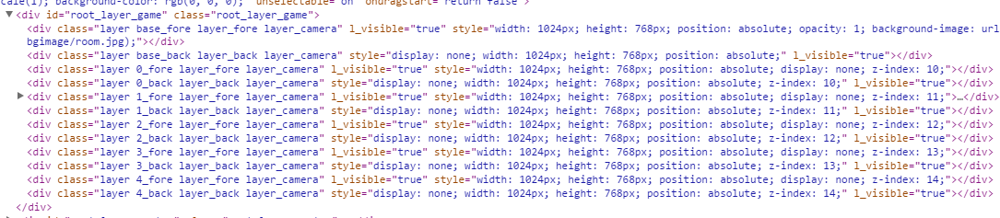

ティラノスクリプトのプラグインの作り方-タグを追加する
はじめに
ティラノスクリプトのプラグインをjsを書いて作ります。
公式のプラグインを自作して公開しようにはプラグインの作り方が記載されています。フォルダ構造などはここで学べますが、ここに記載されているのはティラノスクリプトのデフォルトのタグを使って作るようなプラグインであって、jsを書いて作るタイプのプラグインの説明はされていません(2018/08/05現在)。
そこで今回は、jsを書いて新しいタグを作るプラグインの作り方を説明します。
準備
開発環境として用意するのは最新のスタンダードパッケージとデバッグ用のティラノライダーです。ティラノライダーを使うことにより、いつものデベロッパーツールを開けるのでhtml構造を確認したり、コンソールを見ることができます。
また、ティラノスクリプトのインタープリタやデフォルトのタグ類はスタンダードパッケージ内の tyrano/plugins/kag フォルダ内にありますが、minifyされているので、Githubリポジトリからminifyされていないファイルをダウンロードしてくることをおすすめします。
jsをロードするまで
まず、公式のプラグイン作成のマニュアルどおり、data\others\pluginフォルダに今回作成するプラグインのフォルダを作ります。
今回はプラグイン名をmypluginとし、その名前でフォルダを作りました。
そして、フォルダ内にinit.ksとmain.jsファイルを作ります。
init.ksファイル内で以下のようにjsファイルをロードすればプラグイン内でjsを扱うことができます。
@loadjs storage=plugin/myplugin/main.js
@return
最後にゲーム起動時に呼ばれるfirst.ksファイルで以下のプラグインのロードコマンドを追加します。
[plugin name=myplugin]
これで準備は整いました。
事前知識
ティラノスクリプトはCanvasなどは使わずにDOMで構成されています。使用されている主なライブラリはjQueryです。
tyrano/libsフォルダにライブラリはあるので確認してください。
セーブデータはTYRANO.kag.statに保存できます。保存時はJSON.stringifyされてテキストとして保存されます。
TYRANO.kag.tmpにテンポラリなデータは保存できます。
基本形
新しいタグを追加するときの基本的な形は以下のようになります。
(function(){
var myTag = {
vital : [],
pm: {},
start : function(pm) {
console.log("テスト");
//終わったら次のタグへ
this.kag.ftag.nextOrder();
}
};
TYRANO.kag.ftag.master_tag.myTag = object(myTag);
TYRANO.kag.ftag.master_tag.myTag.kag = TYRANO.kag;
})();
TYRANO.kag.ftag.master_tagにタグが管理されているのでそこにタグを作って追加する形になります。
タグの主な処理はstartメソッド内に記述します。処理が終わったら、最後にkag.ftag.nextOrder()を呼べば次の処理に移ります。
このタグの場合、[myTag]と記述してシナリオファイルから呼ぶと、consoleにテストと表示されます。
パラメータの処理
vitalとpmについて説明します。vitalは必須パラメータの指定です。
vital : ['text']とすれば、textパラメータが必須となります。必須パラメータ無しでタグを呼ぶと以下のようにエラーが出るようになります。
pmはデフォルトパラメータを指定します。例えば、pmを以下のように定義し、タグの呼び出しで[myTag layer=2]とすると、
startメソッドに{layer:2, color: "#000"}として渡されます。
pm: {
layer: 1,
color: "#000",
}
渡されたパラメータによってエラーを出力したいときは以下のようにkag.errorメソッドを呼びます。
this.kag.error("エラー！");
レイヤーについて
画面に要素を追加するにはレイヤーの構造を理解する必要があります。
レイヤーはdivであり、レイヤー番号と前面、背面を組み合わせたclassで指定したレイヤーを取得できます。
例えば、レイヤー1の前面を取得したい場合は以下のようにします。
var layer1Fore = $(".1_fore");

まとめ
プラグインでjsを書いて新しいタグを作る方法を簡単にですが説明しました。
デフォルトのタグはtyrano/plugins/kagにあるのでこれを参考にすると新しいタグも作りやすいと思います。
使用バージョン
ティラノスクリプト Ver.450